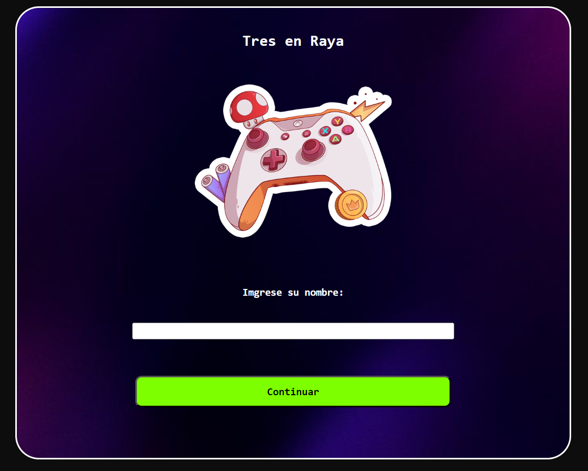
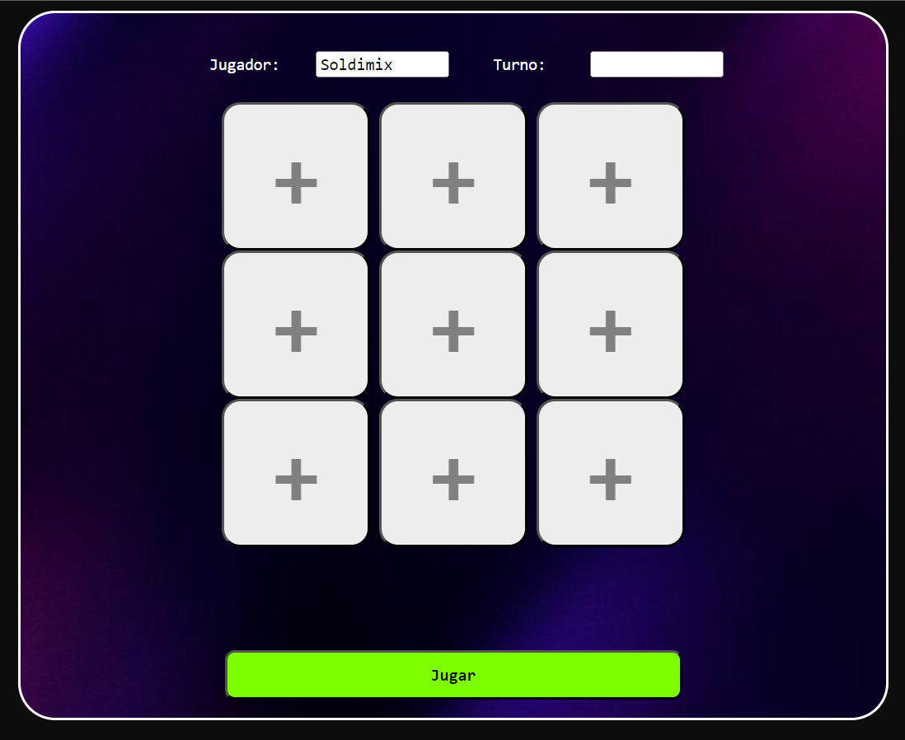
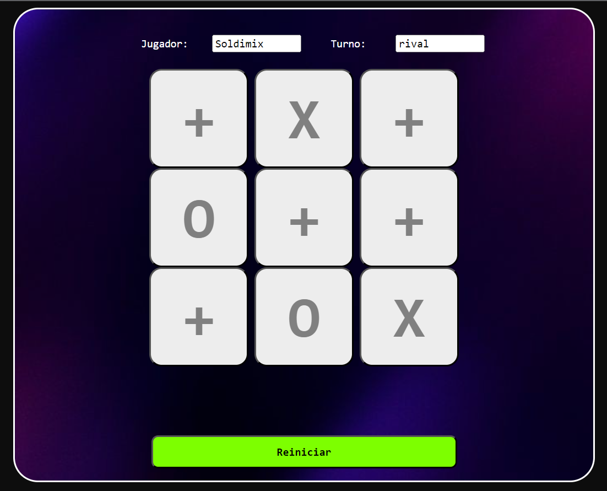
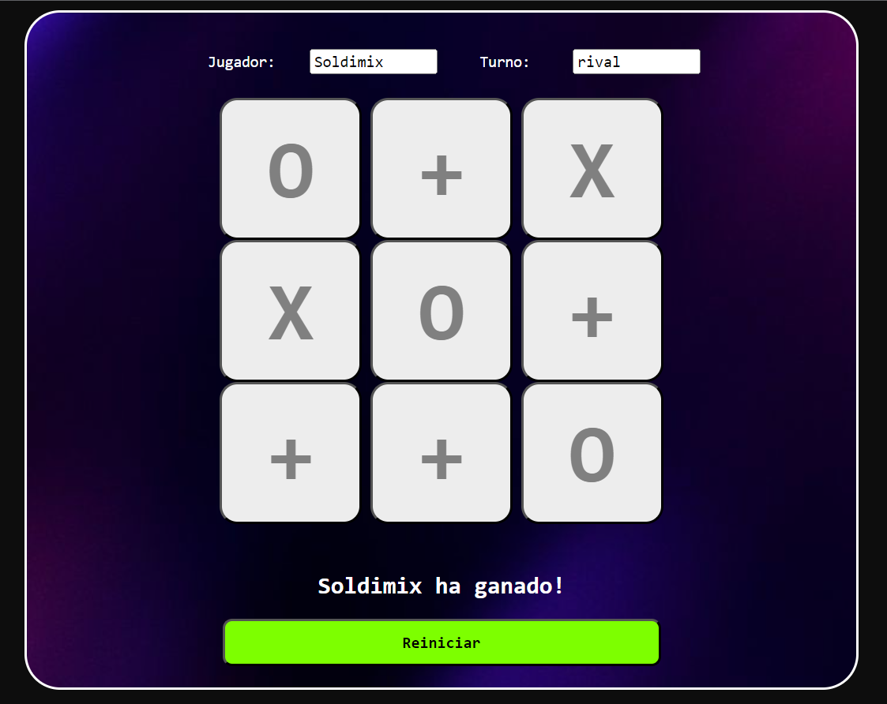

Tres en Raya
Ver en GitHub
Juego tres en raya o tic tac toe, el cual contiene metodos que comunican el Brontend y Backend. Dichos metodos filtran al jugador ganador, designan un turno y tambien lo actualizan de acuerdo al turno actual, reinician el juego, y designan un valor en cada boton. Para este proyecto se ha utilizado Spring MVC, JSP y JSTL.
Tecnologias
- Spring MVC
- JSP
- JSTL



